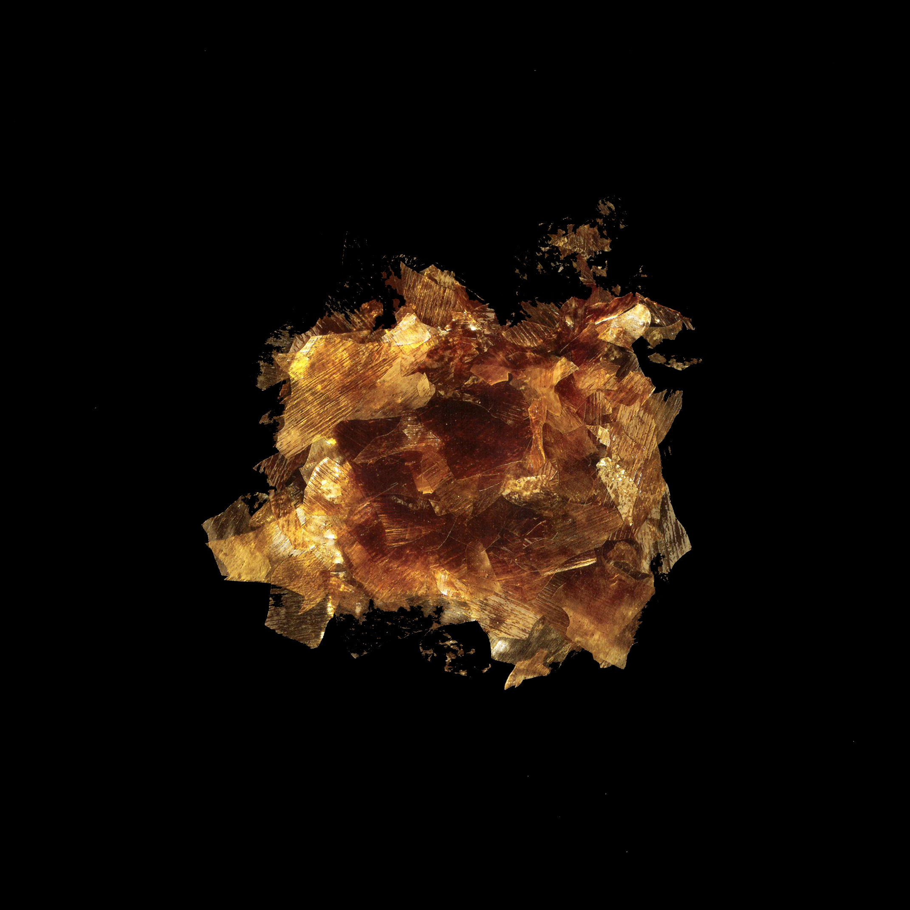

Shellac

9000-59-3
Synonyms or siblings
Gum lac, Orange shellac, Confectioner's glaze, Resinous glaze, Confectioner's resin, Lac wax, Candy glaze, Pure food glaze, Natural glaze, Lac resin
Funtion
Appeal - Color, Preservative - Shelf Life Extender
Description
Shellac, made from the secretions of the Kerria lacca insect, is used as a food sealant and coating for pills, and also in cosmetics and varnishes. Harvested mainly in India, China, and Thailand, it's a natural polymer similar to plastic. However, it’s not suitable for vegetarians and can cause skin irritation.
다양한 이름
쉘락
기능
착색제, 피막제
설명
셸락은 열대지방의 콩과나 뽕나무과의 수목에 기생하는 락패각충이 분비하는 수지상 물질이다. 사탕과 카카오 제품의 겉을 코팅하는 피막제로 사용되며, 표면처리제, 껌기초제, 광택제, 레코드판의 재료 등으로 이용된다. 이 물질은 견고하고 강인하며 높은 광택이 있는 막을 형성하는 것이 특징적이다.